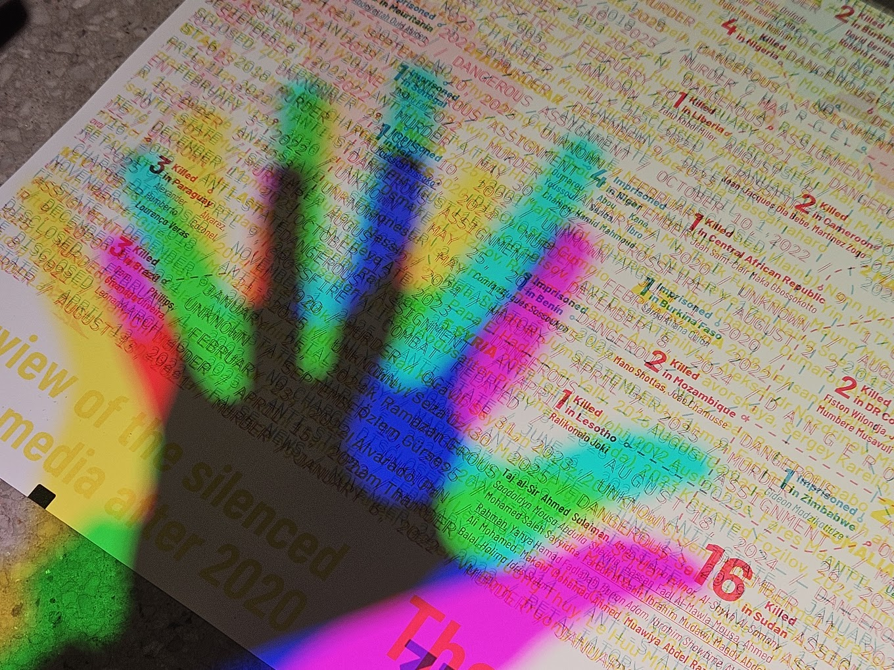

pressed/suppressed
Rather than representing press freedom through statistics alone, I layered the names of journalists killed or imprisoned across overlapping CMY color channels, producing a map that is illegible without applying color filters to separate the layers. The difficulty of reading it is deliberate: the information depicted is itself withheld or dangerous to access, and the map asks the viewer to make an effort proportional to that reality before it yields its content.
